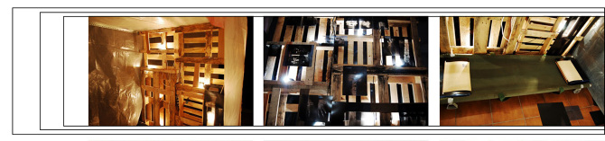

My first project that shows the power of work together. Did it with
recycled materials we worked to recreate the softness and the hardness of
the body, Fragiles is about the power of the resistance and insistance in
the keeping of an effort.


Nombre: Siro Santos García y Mario Romera Gómez Titulo: Frágiles
Dimensiones: 194 cm. altura x 190 cm. ancho x 178 cm. profundidad
Selección para la exposición en el Centro Cultural Gran Capitán dentro de
la exposición Arte y reciclaje 2009. Granada. Un esqueleto sobre otros
esqueletos, es la redundancia de la obra, que a través de la estructura
humana, alude tanto a los desastres de la guerra como a la fragilidad del
hombre. La instalación se presenta en contraste, ya sea por los juegos de
luces, como por la serenidad del ambiente con las imágenes dramáticas de
prótesis y operaciones. Entra, siéntate y relájate.